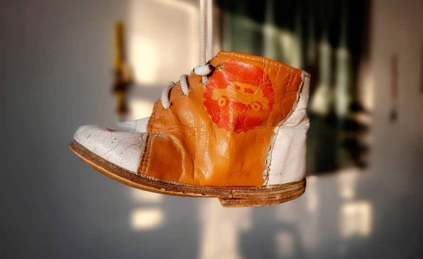

{% extends 'main/base.html' %}
{% block title %}
about
{% endblock %}
{% block content %}

Башмак
"...Кем-то потерянный детский левый башмачок принёс нам Жылкычы Жакыпов, он тогда был художником-постановщиком на "Маймыле". И мы использовали этот реквизит в эпизоде, когда мать главного героя, потеряв всякую надежду, решилась расстаться с пьющим мужем. Она вместе с детьми томилась в автобусе, ожидая отъезда. Маймыл стоял держась за поручень, где сиротливо висел башмачок, и эта деталь очень точно дополняла состояние мечущегося между матерью и отцом юноши. Перед самым отъездом, он выходит из автобуса и возвращается к отцу. Маймыл словно половинка одной семьи, одной жизни.
Жылкычы был не только художником, но и сыграл одну из сложных ролей, отца Маймыла. Мы ставили камеру, он сидел спиной к нам, и собирались его снимать через отражение в зеркале на подоконнике. Это сцена одиночества и я подумал, почему бы отцу не заплакать, хотя в сценарии этого не было и с ним не обсуждали. Не успел спросить, может ли он заплакать, как слезы потекли, я опешил и стал его успокаивать, по-моему, даже смеялись. Сожалели, что растеряли его состояние и все же решили попробовать снять плачущего отца. Три или четыре дубля как нам хотелось, плакал и в нужное время отворачивал и клал на подоконник зеркало, как бы стыдясь своих запоздалых слез. С нами на съёмках был итальянец Умберто Грасси, представляющий "Ное продюксьон", он назвал Жылкычы кыргызким Чарльз Бронсоном.
Жылкычы Жакыпов - один из лидеров группы конца 80-тых годов "Новая волна", выдающийся художник, совершивший в буквальном смысле революцию в национальном изобразительном искусстве, и мне было за честь пригласить его в съёмочную группу".
{% endblock %}